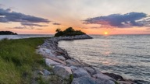

Cape Cod was first settled by European explorers in the early 1600s. The first towns that were setteld were Sandwich, Barnstable and Yarmouth along the bay. The Wampanoag tribe who had already been settled on the Cape taught the settlers useful skills to live on the land.
Tourism started to boom during the 19th century when people in Boston started to travel to the Cape. Tourism continued to grow as a train service from Boston was built and reached Sandwich in 1848 and up to Provincetown by 1873. From there, factors like building the Cape Cod highway, the establishment of the National Seashore and the Kennedy family vacationing in Hyannis attracted more and more people.
Where is Cape Cod?
Cape Cod is located on the Eastern shore of the United States. It is a peninsula off of Massachusetts and is commonly referred to looking like a hooked arm. Cape Cod is approximately one hour and 15 minutes south of Boston. To get from the Cape Cod canal in Sandwich, MA to the tip of Cape Cod in Provincetown, MA it takes just over one hour.
Fun Facts
- Cape Cod was named by English explorer, Bartholomew Gosnold, who docked and caught a large amount of codfish.
- When the pilgrims journeyed over, they first docked in Provincetown at the tip of Cape Cod but believed they were too exposed. From there, they decided to keep sailing until they reached Plymouth, MA.
- The first towns occupied were set up along a trail the Native Americans used which is now Route 6A, Cape Cod's main highway.